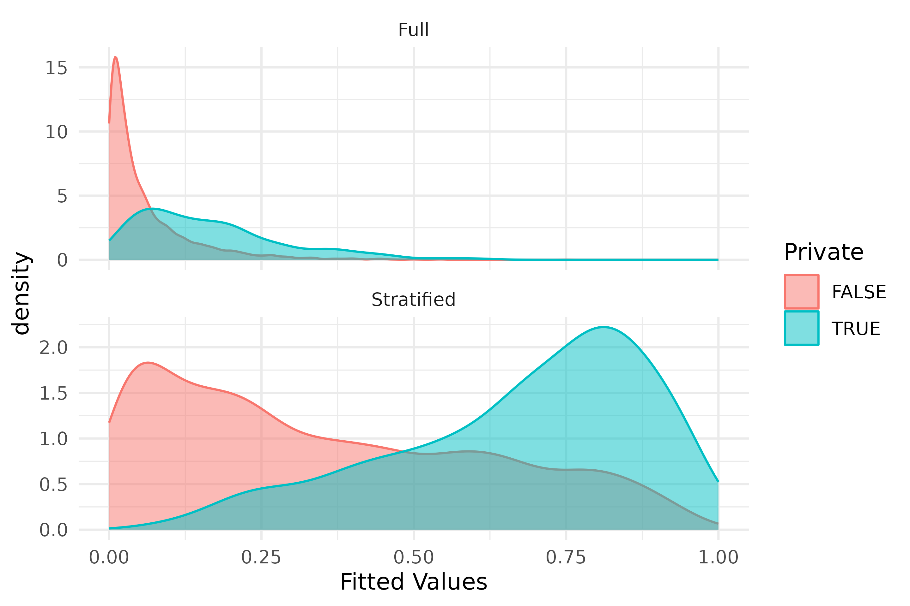
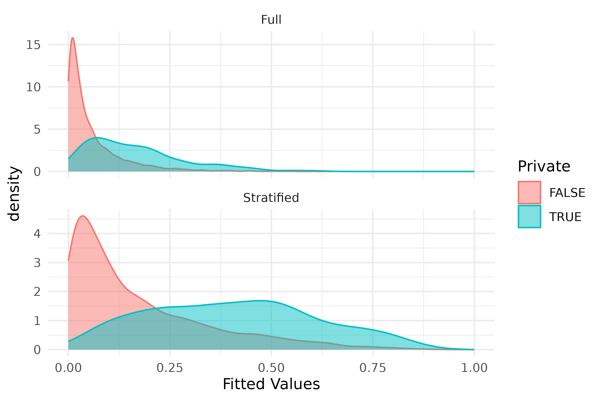
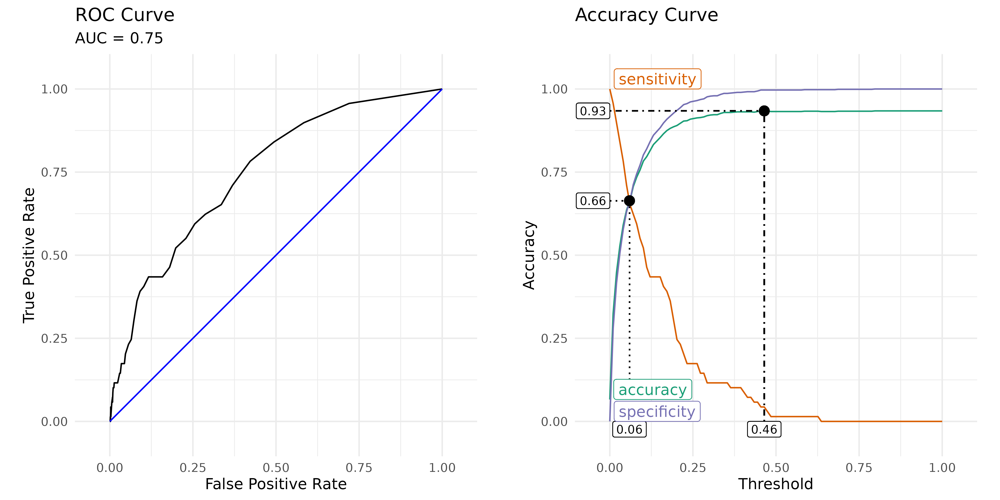
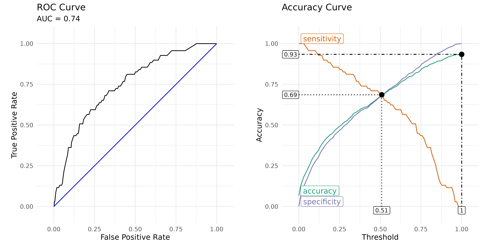

Introduction
Statistical modeling when there is substantial imbalance in the dependent variable poses unique challenges. In these situations models often favor the majority class. Two common approaches are upsampling and downsampling. Upsampling is the process of increasing the sampling of the minority group to more closely match the size of the majority group. Conversely, downsampling involves sampling from the majority group to more closely match the size of the minority group. The latter is generally not preferred since it artificially increases the sample size (i.e. n) resulting in decreasing the standard error estimates.1 This paper introduces an approach where multiple logistic regression models are estimated using the minority group and a unique subset of the majority group such that all observations are majority observations are used in exactly one model while the minority group is reused across models. The final model pools the models using Rubin’s Rules defined within the context of multiple imputation (Rubin, 2004).
Impact on Fitted Values
In the United States there are broadly two types of schools, public
and private. Public schools are funded by property taxes whereas
privates schools charge tuition to the families. The Programme for
International Student Assessment (PISA) is an international
evaluation managed by the OECD. It measures how well 15-year-old
students apply their knowledge and problem-solving skills in reading,
mathematics, and science to real-world challenges. PISA samples students
from both public and private schools within the United States. The
medley package contains a subset of the PISA data for the
United States containing 5233 observations of 44 variables. There are
4888 public school students and 345 private school students (6.59%)
To exemplify the problem with estimating logistic regression with imbalanced data, let’s consider several models where the ratio of public-to-private schools varies from 1-to-1 to 14-to-1. Figure @ref(fig:shrinking-values) represents the distributions of the fitted values from a logistic regression with varying ratios of public-to-private schools. That is, all private school students were used in every model. For the 1-to-1 model, the first 345 public school observations, then for the 2-to-1 model the first 690 observations, etcetera until the final model uses all observations. The vertical lines correspond to the median fitted values. With all else equal, as the ratio of public-to-private schools increases, the range of fitted values shrinks towards the majority group.2

Distributions for varying public-to-private ratios. Vertical lines corrospond to the median of the fitted values.
Stratified Modeling
The goal of stratified modeling is to address imbalance in the
outcome variable while still leveraging all data. The first step is to
separate the majority and minority classes. Observations in the minority
class will be used in all model estimations. Observations in the
majority class will be randomly assigned a model. The number of models
is determined by the extent of the imbalance the specified ratio of
majority-to-minority observations (the default is 1). For the PISA data
here, there are approximately 14 times as many public school
observations to private school observations. Using a ratio of one we
will estimate 14 models. It should be noted that the public schools
students will be used in exactly one model whereas the private school
students will be used in all models. The stratified_glm()
performs the modeling. To maximize flexibility this function can pass
any parameter to the stats::glm() function. However,
parameters that reference specific observations
(e.g. weights, subset) should not be used
since stats::glm() will be called with subsets of the data
that will not match the order of the data. Similarly, the
family parameter defaults to
binomial(link='logit') since this method only works with
classification problems with two classes.
results <- medley::stratified_glm(
formula = Private ~ .,
data = pisa,
ratio = 1
)The results of all the models are combined using the
mitools::MIcombine function (Lumley, 2026). Although this
approach is designed for combining multiple imputed data sets, in this
case it allows us to have a single coefficient and standard error that
is not artificially smaller given a larger sample size for a model. The
fitted values from all the individual models is available in the
fitted element of the returned object. Additionally, the
individual model results are available in the model
element. The summary() function returns a data frame with
the combined coefficients, standard error, and p-value. Below only
coefficients where p < 0.1 is printed to save space.
pisa_summary <- summary(results)
pisa_summary |> dplyr::filter(p < 0.1)
#> coefficients se p
#> (Intercept) -5.21 2.63 0.051
#> ST04Q01Male 0.84 0.28 0.004
#> ST08Q04TRUE -0.50 0.27 0.071
#> ST08Q05TRUE 0.75 0.36 0.038
#> ST20Q06TRUE 1.79 0.95 0.060
#> ST20Q07TRUE 0.72 0.31 0.021
#> ST21Q05Three or more 0.93 0.45 0.042
#> ST22Q01201-500 books 1.18 0.59 0.050Figure @ref(fig:fitted-distributions) plots the density distributions from the full model (single model using all data) and the stratified models. The stratified sample shows a distribution that spans the entire range of fitted values resulting in fitted values that are more interpretable.
plot(results)
Distribution of fitted values for full and stratified models
Predictions for new data can be estimated using the
predict() function.
pisa_predicted <- predict(results, newdata = pisa)
head(pisa_predicted)
#> 1 2 3 4 5 6
#> 0.79 0.16 0.30 0.24 0.22 0.46Figure @ref(fig:fitted-distributions-3) shows how the stratified modeling is less effective when the ratio of public-to-private students increases to 3-to-1.
medley::stratified_glm(
formula = Private ~ .,
data = pisa,
ratio = 3
) |> plot()
Distribution of fitted values when a ratio of three is used for the stratified model
Impact for Predictive Modeling
Stratified modeling clearly provides a strategy for addressing the issue of shrinking fitted values from logistic regression as imbalance in the outcome increases. In this section we will explore what impact, if any, does this approach have when modeling for prediction. To begin, we will split our data into a training and validation data set with 80% for training and 20% for validation.
set.seed(2112); split <- medley::stratified_split(pisa, 'Private', 0.8)
pisa_train <- split$train
pisa_valid <- split$validation
pisa_train$Private |> table() |> prop.table()
#>
#> FALSE TRUE
#> 0.934 0.066
pisa_valid$Private |> table() |> prop.table()
#>
#> FALSE TRUE
#> 0.934 0.066Full Model
First, we will estimate the logistic regression model using the full data set.
Get the predictions for the validation data set.
full_new_predictions <- predict(full_model, newdata = pisa_valid, type = 'response')We calculate the metrics for a receiver operating characteristic below. The summary function provides us with some thresholds that maximize accuracy, minimize cost3, or where the specificity and sensitivity curves intersect.
full_roc <- medley::calculate_roc(
predictions = full_new_predictions,
observed = pisa_valid$Private
)
summary(full_roc)
#> AUC = 0.747
#> Cost of false-positive = 1
#> Cost of false-negative = 1
#> Threshold with minimum cost = 0.465 (accuracy = 93.4%)
#> Threshold with maximum accuracy = 0.465 (accuracy = 93.4%)
#> Sensitivity and specificity intersection = 0.059 (accuracy = 66.4%)Figure @ref(fig:full-roc) represents the receiver operating characteristic plot for the validation data using the full model.
plot(full_roc)
Receiver operating characteristic (ROC) and accuracy curves for the full model
In order to balance sensitivity and specificity we provide a confusion matrix using the intersection of these two curves as the cut point for determing the outcome class.
medley::confusion_matrix(
observed = pisa_valid$Private,
predicted = full_new_predictions > attr(full_roc, 'intersection')
)
#> predicted
#> observed FALSE TRUE
#> FALSE 649 (61.99%) 329 (31.42%)
#> TRUE 23 (2.20%) 46 (4.39%)
#> Accuracy: 66.38%
#> Sensitivity: 66.36%
#> Specificity: 66.67%Stratified Model
Now let’s estimate the stratified model.
stratified_model <- medley::stratified_glm(
formula = Private ~ .,
data = pisa_train,
ratio = 1
)
stratified_new_predictions <- predict(stratified_model, newdata = pisa_valid)Examine the receiver operating characteristics to determine the optimal cut point. Figure @ref(fig:stratified-roc) plots the results.
stratified_roc <- medley::calculate_roc(
predictions = stratified_new_predictions,
observed = pisa_valid$Private
)
summary(stratified_roc)
#> AUC = 0.745
#> Cost of false-positive = 1
#> Cost of false-negative = 1
#> Threshold with minimum cost = 1 (accuracy = 93.4%)
#> Threshold with maximum accuracy = 1 (accuracy = 93.4%)
#> Sensitivity and specificity intersection = 0.509 (accuracy = 68.6%)
plot(stratified_roc)
Receiver operating characteristic (ROC) and accuracy curves for the stratified model
Finally, calculate the confusion matrix using the intersection of the sensitivity and specificity curves as the cut point for determing predicted class.
medley::confusion_matrix(
observed = pisa_valid$Private,
predicted = full_new_predictions > attr(stratified_roc, 'intersection')
)
#> predicted
#> observed FALSE TRUE
#> FALSE 975 (93.12%) 3 (0.29%)
#> TRUE 68 (6.49%) 1 (0.10%)
#> Accuracy: 93.22%
#> Sensitivity: 99.69%
#> Specificity: 1.45%Often introductory texts for predictive modeling and logistic regression suggest using a cut point of 0.5 for determining the class. As show above, this is not the optimal cut point when there is significant imbalance. The stratified modeling approach introduced gets us closer to that intuitive cut point in the middle. It should be noted that this approach is no better or worse for making predictions. However, it does address the issue of shrinking fitted values and makes the fitted and predicted values more interpretable.
Conclusion
The stratified modeling approach provides a modeling approach for logistic regression where interpretability of the fitted or predicted values are meaningful. For predictive modeling adjusting the cut point for making a class prediction will provide a similar result. However, this issue was initially encountered when conducting propensity score analysis (PSA). Logistic regression is often used to estimate the propensity scores, which are defined as the conditional probability of being in the treatment (Rosenbaum & Rubin, 1983). When using logistic regression, the propensity scores are simply the fitted values from the model. In this context having fitted values that span the entire range where the distribution of the treatment group (private schools in this example) is skewed to the right and the control group (public schools in this example) is skewed to the left. For these situations the stratified modeling approach may provide a reasonable approach to addressing the issue of shrinking fitted values from logistic regression with significant imbalance.
References
Bryer, Jason M., “A national study comparing charter and traditional public schools using propensity score analysis” (2014). Legacy Theses & Dissertations (2009 - 2024). 1090. https://doi.org/10.54014/H2BR-2XKN
Lumley, T (2026). mitools: Tools for Multiple Imputation of Missing Data_. https://doi.org/10.32614/CRAN.package.mitools. R package version 2.7, https://CRAN.R-project.org/package=mitools.
Rosenbaum, P.R., & Rubin, D.B. (1983). The central role of the propensity score in observational studies for causal effects. Biometrika, 70(1), 41–55, https://doi.org/10.1093/biomet/70.1.41
Rubin DB. Multiple Imputation for Nonresponse in Surveys. New York: John Wiley and Sons; 2004.